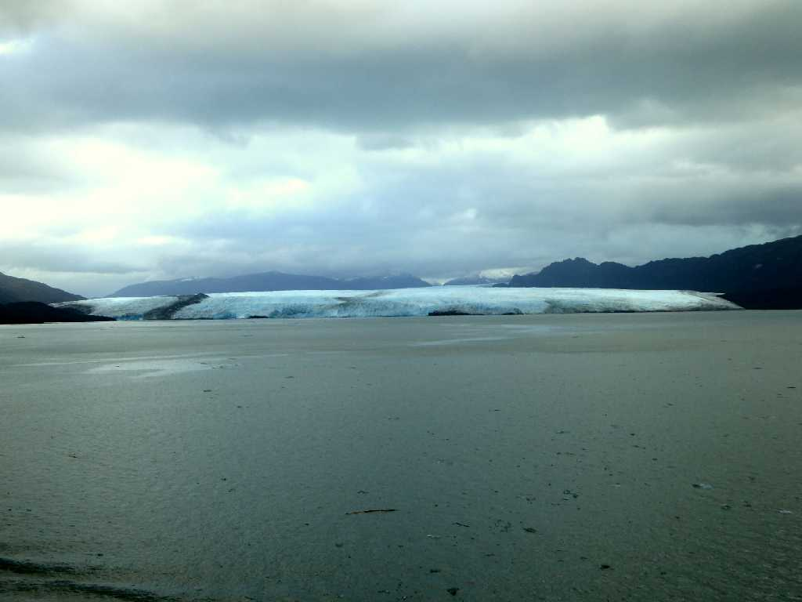
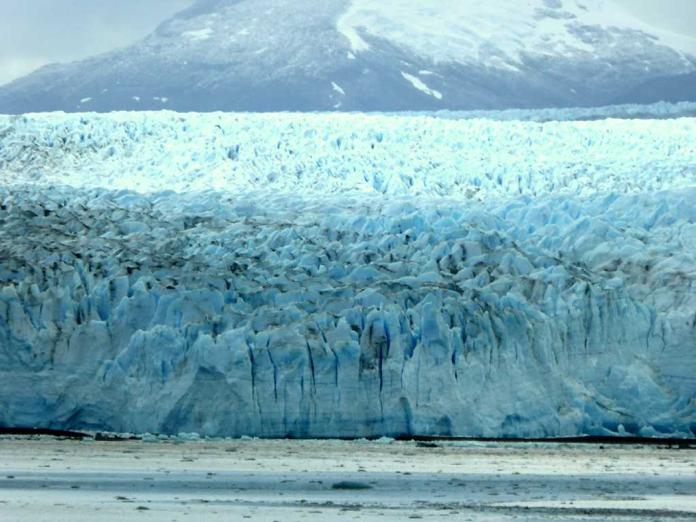
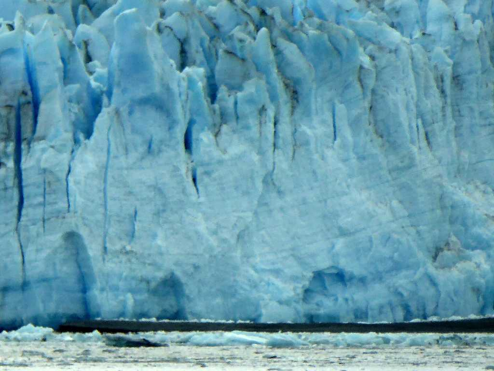
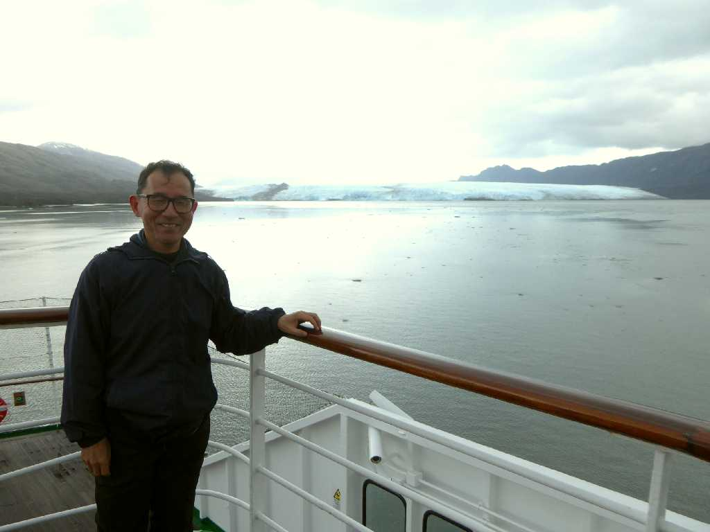
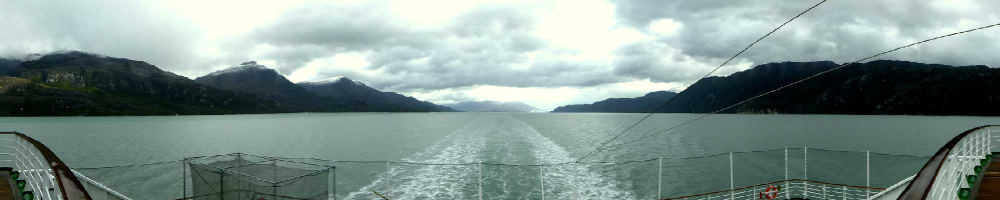
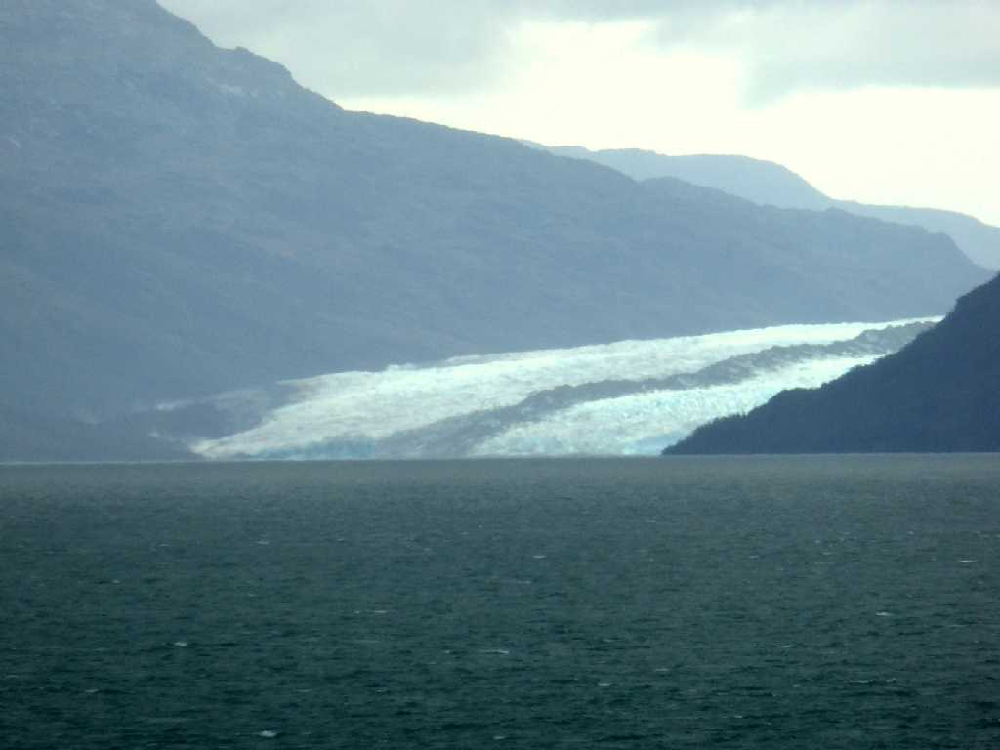

Glaciar Pío XI
南極大陸を除く世界最大のパタゴニア氷床から太平洋側に流れ出る最大のピオ１１世氷河

Glaciar Pío XI
南米大陸最大級の氷河と云われ長さ６６㎞表面積１,２６５㎢ある

Glaciar Pío XI
氷河は地球温暖化で後退しているがピオ１１世氷河は例外的に前進し続けている

February 22 2016 Glaciar Pío XI

Glaciar Pío XI

Glaciar Pío XI
February 22 2016 Ice Glaciar Pío XI
乗務員がテンダーボートで採取してくれた崩壊した氷河の氷で乾杯 高圧縮により密度が濃いのか溶けるのに非常に時間がかかる